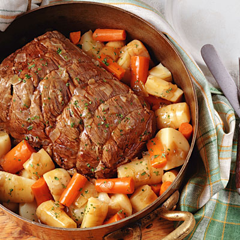

Pot Roast

Description
Slow cooker pot roast recipe with carrots, onion, mushrooms and potatoes.
Ingredients
- 2-3lb. chuck roast
- 1-2lb. yukon gold potatoes, chunked
- 1 medium onion, quartered
- 1 cup baby bella mushrooms, chopped
- 1lb. carrots, peeled and quartered
- 1 Tbsp. cooking oil
- 1 cup beef stock
- 1 Tbsp water
- 1 Tbsp corn starch
- 2 cloves garlic, minced
- Salt
- Pepper
Directions
- Salt and pepper all sides of the roast, liberally
- Heat oil in skillet over medium high heat
- When oil ripples, sear each side of the roast for 2-3 minutes until browned
- Layer the bottomw of the slow cooker with the potatoes
- Add the onion and carrots to the slow cooker
- When finished searing the roast, place atop the vegetables in the slow cooker
- Combine the beef stock and garlic, pour over the top of the roast
- Secure the lid on the slow cooker and cook on high for 5-6 hours, low 7-8 hours
- Before serving, remove food contents from the slow cooker and set aside
- Pour the liquid into a medium sauce pan over medium high heat
- Combine the water and cornstarch, mixing thoroughly, then add to sauce pan
- Stir and heat until sauce thickens
- Serve